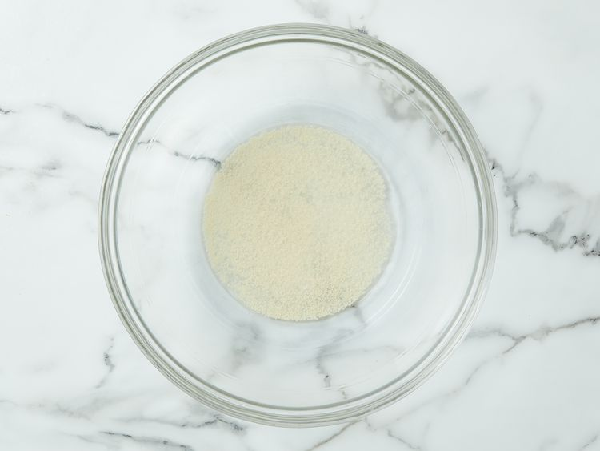
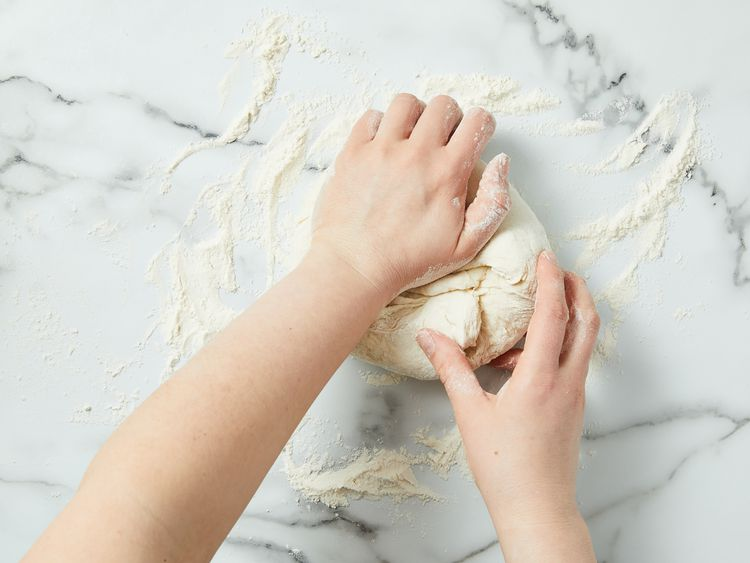
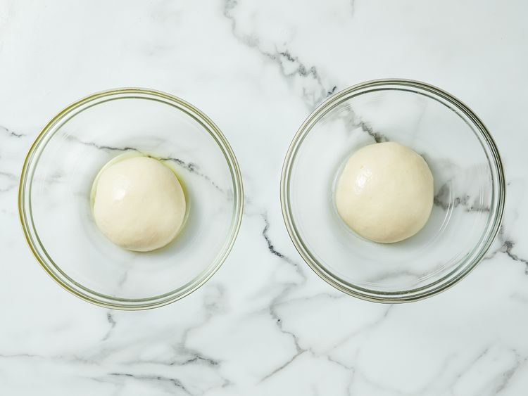
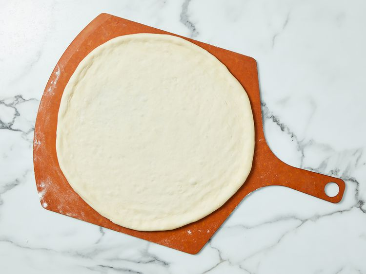
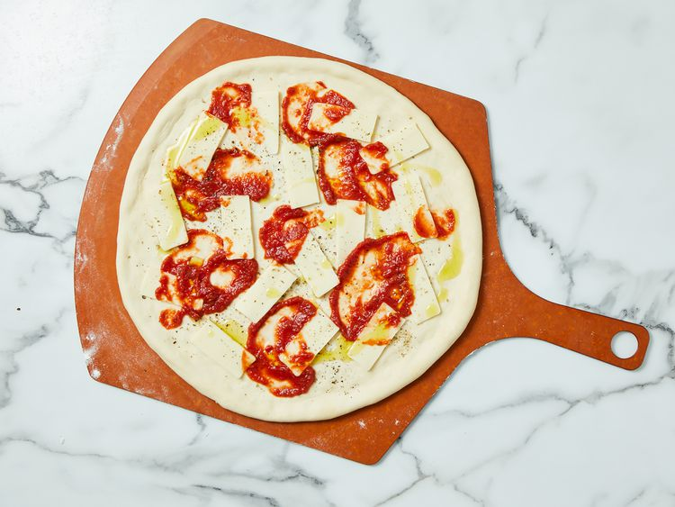
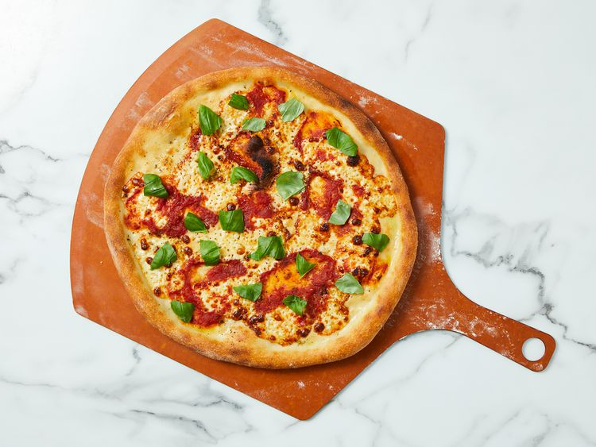

pizza recipe
home page

Brick-Oven Pizza (Brooklyn Style)
This simple brick-oven pizza recipe has been made famous by several
well-known,
Brooklyn wood-fire pizzerias. Best
accompanied by
ice-cold, pilsner-style lager beer.
Ingredients
- ¼ cup warm water
- 1 teaspoon active dry yeast
- 1 cup cold water
- 1 teaspoon salt
- 3 cups bread flour
- 1 tablespoon extra-virgin olive oil
Toppings
- 6 ounces low moisture mozzarella cheese, thinly sliced
- ½ teaspoon dried oregano
- ¼ teaspoon freshly ground black pepper
- ½ cup no salt added canned crushed tomatoes
- 2 tablespoons extra-virgin olive oil
- 6 leaves fresh basil, torn
Directions
-
step 1 Make the dough:
Pour warm water into a large bowl, then
sprinkle yeast over the top.
Let stand for 5 minutes. Stir in cold
water and salt. Stir in flour, 1 cup at a time until incorporated.

-
step 2 Knead dough on a floured surface until smooth, about 10 minutes.

-
step 3 Divide in half and form into two tight dough balls. Coat with
olive oil and refrigerate in a sealed container for at least 16 hours.
Be sure to use a big enough container to allow dough to rise.

-
step 4 Make the pizzas: Remove dough from the refrigerator one hour
prior to using.
-
step 5 Preheat the oven, with a pizza stone on the lowest rack, to 550
degrees F (288 degrees C). Lightly dust a pizza peel with flour.
-
step 6 Prepare the first pizza: Lightly dust one dough ball with flour
and stretch gradually until about 14 inches in diameter, or about the
size of the pizza stone. Place on the floured peel.

-
step 7 Lay 1/2 of the mozzarella
on the crust, then sprinkle 1/4
teaspoon oregano and 1/8 teaspoon
pepper over the top. Randomly
arrange 1/4 cup crushed tomatoes over the pizza, leaving some empty
areas, then drizzle 1 tablespoon olive oil over top.

-
step 8 With a quick back and forth jerk, make sure dough will release
from the peel easily. Place the tip of the peel at the back of the
preheated pizza stone, and remove the peel so that the pizza is left on
the stone.
-
step 9 Bake in the preheated oven until the crust begins to brown, 4 to
6 minutes.
-
step 10 Slide the pizza onto the peel and remove from the oven; then
slide off the peel onto a work surface. Sprinkle 1/2 of the basil leaves
randomly over the pizza. Cut into wedges and serve.

- step 11 Follow Steps 5 through 9 to make the second pizza.